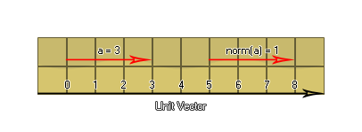

Por lo general, los vectores se pueden usar en muchas situaciones, pero a veces se desea restringir su valor (como cuando se trata de ángulos) y por eso los normalizamos. Esto es esencialmente un truco matemático que se usa para convertir un vector de longitud n en un vector de longitud 1, lo que significa que los componentes del vector se normalizan para estar entre 0 y 1. Estos vectores también se llaman vectores unitarios: 
Para calcular un vector normalizado, primero debemos tener los componentes vectoriales originales, luego usarlos para obtener la longitud del vector. Luego dividimos cada una de las componentes del vector por esta longitud para obtener los componentes del vector normalizado que forman el vector normalizado en el que la suma de los cuadrados de todas las coordenadas es igual a 1. Aquí se muestra cómo: 
Primero tomamos las coordenadas del vector y obtenemos los componentes:
vx = (x2 - x1) = (7 - 1) = 6
vy = (y2 - y1) = (4 - 1) = 3
Luego usamos estos valores para calcular la longitud del vector:
len = sqr(vx2 + vy2) = sqr(36
+ 9) = sqr(45) = 6.708203932499369
Ahora, eso nos da la longitud exacta del vector a, así que usemos eso para normalizar los dos componentes vectoriales vx y vy:
vx = (vx/len) = (6 / 6.708203932499369) =
0.8944271909999159
vy = (vy/len) = (3 / 6.708203932499369) = 0.4472135954999579
a = 1
¡Estupendo! ¡Ahora hemos normalizado los componentes del vector! Pero, ¿de qué uso práctico es eso en el contexto de GameMaker Studio 2 ? De acuerdo, déjanos un ejemplo práctico...
Digamos que tienes un juego donde el jugador tiene que dispararle a un enemigo y necesitas saber cuánto debe mover el objeto con bala a lo largo del eje xey a cada paso para golpearlo:
Para esto usarías las coordenadas del jugador y del enemigo para obtener los componentes del vector y la longitud, luego los normalizarías para obtener un valor entre 0 y 1 que finalmente multiplicarías por la velocidad que deseas que la bala viaje en cada paso. Estos dos valores finales los almacenaría y agregaría a las coordenadas iniciales xey de cada paso. ¿Suena complicado? No es, mira (los valores se han redondeado a un decimal para mayor simplicidad):
px = 100;
py = 425;
ex = 356;
ey = 83;
bullet_speed = 5;
vx = (ex - px) = 256
vy = (ey - py) = -342
len = sqrt(vx2 + vy2) = sqrt(65536 + 116964)
= 427.2
vx = vx / len = 0.6
vy = vy / len = 0.8
speed_x = vx * bullet_speed = 3
speed_y = vy * bullet_speed = 4
Entonces, para alcanzar el objetivo necesitamos agregar 3 a la coordenada x de las balas y 4 a su coordenada y en cada paso.